195 — DNS autoritativo, recursivo, split-horizon y DNSSEC
Parte: 16 — Redes cloud avanzadas, conectividad híbrida y edge
Nivel: avanzado · Horas estimadas: 4
Laboratorio: network · Estado: EXECUTABLE_CORE
🎯 Propósito
Entender el sistema de nombres lo suficiente para diagnosticarlo, porque es la primera sospecha de casi todos los incidentes raros y la última que se comprueba bien. La clase separa autoritativo de recursivo, explica por qué el tiempo de vida es una decisión de arquitectura y no un ajuste, aborda la vista partida entre red interna y externa, y trata DNSSEC con honestidad: qué resuelve, qué no, y por qué su modo de fallo es apagar el dominio entero.
📚 Resultados de aprendizaje
Al finalizar podrás:
- Distinguir resolución autoritativa de recursiva y saber dónde mirar cada una.
- Elegir tiempos de vida según lo que se vaya a cambiar y cuándo.
- Diseñar vista partida sin que interno y externo se contradigan.
- Evaluar si DNSSEC compensa, y operarlo sin apagar el dominio.
- Diagnosticar los fallos de nombres por su firma característica.
🧩 Conceptos centrales
| Concepto | Comprensión verificable |
|---|---|
autoritativo |
Servidor que posee la zona y responde con la verdad. Es donde se cambian los registros. |
recursivo |
Servidor que resuelve en nombre del cliente y guarda en caché. Es donde vive la respuesta que el cliente ve. |
tiempo de vida (TTL) |
Cuánto puede cachearse una respuesta. Determina cuánto tarda un cambio en surtir efecto en todas partes. |
vista partida |
La misma zona responde distinto según quién pregunte: red interna o internet. |
DNSSEC |
Firma criptográfica de las respuestas. Garantiza integridad y origen, no confidencialidad. |
caché negativa |
Almacenamiento de la respuesta «no existe». Su duración la fija un campo que casi nadie mira. |
🧠 Modelo mental
La red cloud es un sistema distribuido de rutas, identidades y políticas; cada salto añade latencia, costo y una frontera de fallo.
Aplicado a esta clase, separa siempre cuatro planos: intención (qué necesita el usuario), configuración (qué declaramos), estado observado (qué existe de verdad) y evidencia (cómo sabemos que cumple). Confundirlos produce diseños que se ven correctos en un diagrama pero fallan al operar.
🗺️ Flujo de razonamiento

📖 Desarrollo
1. Autoritativo y recursivo: dónde mirar
La mitad de los diagnósticos fallidos de nombres vienen de consultar el servidor equivocado.
AUTORITATIVO
posee la zona; responde con la verdad actual
es donde se CAMBIAN los registros
no cachea nada: lo que dice es lo que hay
RECURSIVO
resuelve en nombre del cliente y GUARDA la respuesta
es lo que el cliente configura
puede estar devolviendo algo viejo durante horas
Y EN MEDIO
el sistema operativo cachea
la biblioteca del lenguaje cachea ← el peor
el navegador cachea
el proxy o el balanceador cachea
Y de ahí la regla de diagnóstico:
pregunta al AUTORITATIVO para saber qué hay configurado
pregunta al RECURSIVO que usa el cliente para saber qué ve
y compáralos
→ «yo lo veo bien» casi siempre significa «mi caché es otra»
Y una trampa concreta que aparece en producción:
algunas bibliotecas y máquinas virtuales de lenguaje cachean
la resolución PARA SIEMPRE dentro del proceso
→ un cambio de dirección no surte efecto hasta reiniciar
→ y el servicio parece «no ver» el cambio aunque el TTL
haya vencido hace horas
→ comprobar el comportamiento de caché del entorno de
ejecución es parte del diseño, no del diagnóstico
Los tipos de registro que hacen falta, sin más:
A / AAAA nombre → dirección IPv4 / IPv6
CNAME nombre → otro nombre
ojo: no puede coexistir con otros registros del
mismo nombre, y no vale en la raíz del dominio
ALIAS/ANAME registro propietario que resuelve eso último
NS quién es autoritativo para la zona
MX correo
TXT verificaciones, políticas de correo
SRV servicio, puerto y prioridad
CAA qué autoridades pueden emitir certificados
← el que casi nadie pone y evita emisiones
no autorizadas
PTR dirección → nombre; usado por sistemas de correo
2. El tiempo de vida es una decisión de arquitectura
El TTL se rellena por costumbre y determina cosas importantes.
TTL CORTO (30-60 s)
+ un cambio surte efecto casi enseguida
+ permite conmutación por nombre clase 166
− más consultas y más dependencia del recursivo
− si el autoritativo cae, todo expira rápido y se apaga
TTL LARGO (1-24 h)
+ resistente: si el autoritativo cae, todo sigue
+ menos consultas
− un cambio tarda hasta un día en verse en todas partes
− y en una emergencia, ese día es el tiempo de recuperación
Y la regla que resuelve la elección:
el TTL debe ser MENOR que el tiempo de recuperación que
prometes por ese nombre
→ si prometes conmutar en 15 minutos y el TTL es de 1 hora,
no cumples, hagas lo que hagas clase 185
Y el procedimiento para cambiar algo que tiene TTL largo:
1 bajar el TTL a 60 s
2 ESPERAR el TTL antiguo entero (hasta 24 h)
3 hacer el cambio
4 comprobar
5 volver a subir el TTL
→ saltarse el paso 2 es el error clásico: parte del mundo
sigue con la respuesta vieja
Y dos valores que casi nadie mira y causan incidentes:
CACHÉ NEGATIVA
cuánto se recuerda que un nombre NO existe
se fija en el registro SOA de la zona, no por registro
→ si vale 3 h y creas un nombre nuevo tras haberlo
consultado, tardará 3 h en verse
→ causa típica de «he creado el registro y no funciona»
TTL DE LOS REGISTROS NS
cuánto se recuerda quién es autoritativo
→ un cambio de proveedor de DNS tarda ese tiempo, y suele
ser de 24-48 h
Y una decisión de diseño que evita mucho dolor:
no uses nombres con TTL largo para lo que va a cambiar
separa los nombres estables de los que conmutan
api.cloudshop.com TTL 60 ← conmuta
docs.cloudshop.com TTL 3600 ← estable
3. Vista partida y zonas internas
Casi toda organización acaba resolviendo el mismo nombre de dos formas: por dentro apunta a una dirección privada, por fuera a una pública.
POR QUÉ SE HACE
el tráfico interno no debe salir a internet para volver
→ latencia, coste de salida y exposición clase 200
y el certificado y el nombre siguen siendo los mismos
CÓMO SE HACE
una zona privada, asociada a las redes internas
con los mismos nombres y direcciones privadas
→ el resolutor interno la consulta primero
Y los tres problemas que trae, con su solución:
1. DIVERGENCIA
alguien añade un registro en la zona pública y no en la
privada, o al revés
→ los internos ven una cosa y los externos otra
solución generar ambas del mismo origen, o comprobar
la diferencia automáticamente clase 190
2. NOMBRES QUE SOLO EXISTEN DENTRO
y que se filtran en registros, correos o mensajes de error
→ revelan estructura interna clase 189
3. DIAGNÓSTICO CONFUSO
«a mí me resuelve bien» según desde dónde se pregunte
solución decir SIEMPRE desde qué red se consultó
La resolución en la nube, que tiene sus propias reglas:
cada red tiene un resolutor propio, en una dirección fija
del rango de la red
las zonas privadas se ASOCIAN a redes concretas
→ una red sin asociar no ve la zona
la resolución desde la corporativa hacia la nube exige
reenvío explícito, y viceversa
→ punto de entrada y de salida del resolutor
Y el fallo más común de este montaje:
el reenvío está configurado en un sentido y no en el otro
→ desde la nube se resuelven los nombres corporativos
→ desde la corporativa no se resuelven los de la nube
→ y se descubre el día que un sistema corporativo tiene que
llamar a un servicio nuevo
Y una decisión que ahorra trabajo:
usa un subdominio propio para lo interno
int.cloudshop.com para todo lo privado
→ evita la vista partida en la mayoría de los nombres
→ y deja la partida solo donde de verdad hace falta
4. DNSSEC y los fallos característicos
DNSSEC firma las respuestas para que el resolutor pueda comprobar que no han sido alteradas.
QUÉ RESUELVE
que alguien altere la respuesta por el camino
que un resolutor sea envenenado con datos falsos
QUÉ NO RESUELVE
confidencialidad: la consulta viaja en claro igual
→ eso lo resuelven DNS sobre TLS o sobre HTTPS
que el dominio esté mal configurado
que alguien tome el control de tu cuenta de DNS
Y el motivo por el que se adopta despacio:
SU MODO DE FALLO ES APAGAR EL DOMINIO ENTERO
si una firma caduca o la cadena se rompe, los resolutores
que validan RECHAZAN todas las respuestas
→ no es degradación: es desaparición
→ y el diagnóstico desde fuera parece «el dominio no existe»
Y por eso su operación tiene reglas propias:
vigilar la caducidad de las firmas, con margen ← ley 13
vigilar que el registro de delegación en el dominio padre
coincide con la clave activa
cualquier cambio de proveedor de DNS exige un procedimiento
específico, y es donde más se rompe
y la rotación de claves se ensaya antes ley 22
Los fallos de nombres por su firma, que es lo que permite diagnosticar rápido:
SÍNTOMA CAUSA HABITUAL
funciona en unos sitios y no en caché con TTL vigente en
otros unos recursivos
funciona y de pronto deja de registro cambiado; unos
funcionar, y luego vuelve recursivos ya expiraron
y otros no
creo un registro y no aparece caché negativa del SOA
el servicio no ve la dirección la biblioteca cachea
nueva tras horas dentro del proceso
resuelve distinto según el equipo vista partida y red
distinta
el dominio entero desaparece DNSSEC roto, o los NS
apuntan a un proveedor
que ya no sirve la zona
latencia alta al conectar resolución lenta o
solo la primera vez resolutor sin caché
resuelve pero con dirección de registro huérfano de un
un servicio retirado recurso ya borrado
← peligro real
Y el último merece su propia advertencia:
REGISTRO HUÉRFANO
un nombre que apunta a una dirección o a un recurso que ya
no es tuyo
→ alguien puede reclamar ese recurso y recibir tu tráfico
→ afecta a subdominios apuntando a servicios externos
dados de baja
→ comprobación periódica obligatoria ley 20
Y la lista de comprobación de la clase:
☐ se sabe qué es autoritativo y qué recursivo en cada caso
☐ los TTL son menores que el plazo de recuperación prometido
☐ los nombres que conmutan están separados de los estables
☐ el TTL de caché negativa está revisado
☐ se conoce el comportamiento de caché del entorno de
ejecución
☐ la vista partida se genera del mismo origen o se compara
☐ el reenvío entre nube y corporativa funciona en ambos
sentidos
☐ hay registro CAA
☐ si hay DNSSEC, hay alerta de caducidad de firmas
☐ se comprueban periódicamente los registros huérfanos
☐ hay alerta si la zona deja de responder o cambia sola
Y el cierre que enlaza con la clase siguiente: resuelto el nombre, el tráfico llega a un punto de entrada que lo reparte y termina la conexión cifrada. Balanceo, proxies y gestión de certificados es la materia de la clase 196.
🔬 Ejemplo trabajado
CloudShop sufre cuatro incidentes de nombres en un año. Lo que sigue es cada uno con su firma, el rediseño que salió, y el registro huérfano que encontraron por casualidad.
Incidente 1 · «El cambio no surte efecto», enero.
contexto migración del balanceador de pedidos a uno nuevo
se cambió el registro A de api.cloudshop.com
síntoma a las 2 h, el 30 % del tráfico seguía llegando al
balanceador viejo, que ya estaba apagado a medias
diagnóstico
el TTL del registro era 86.400 (24 h)
el equipo lo bajó a 60 s el mismo día del cambio
→ los recursivos que ya tenían la respuesta antigua la
mantuvieron hasta 24 h
qué faltó bajar el TTL y ESPERAR el TTL antiguo entero
ANTES de cambiar
efecto 6 h de tráfico partido; 340 pedidos fallidos
Incidente 2 · «He creado el registro y no aparece», marzo.
contexto se creó pagos-v2.cloudshop.com para una prueba
síntoma el equipo lo consultó antes de crearlo (por error),
y después de crearlo seguía sin resolver durante
casi tres horas, solo desde algunas redes
diagnóstico
caché negativa: el campo mínimo del SOA valía 10.800 (3 h)
el resolutor había guardado «este nombre no existe»
corrección
caché negativa bajada a 300 s
y una nota en el procedimiento: no consultar un nombre
antes de crearlo
Incidente 3 · «Resuelve bien desde la nube y mal desde la oficina», junio.
síntoma el sistema corporativo de conciliación no podía
llamar al servicio de inventario nuevo
desde la nube todo funcionaba
diagnóstico
zona privada int.cloudshop.com, asociada a las redes de
la nube
el reenvío desde la corporativa hacia el resolutor de la
nube NO existía
→ el reenvío estaba montado solo en el sentido
nube → corporativa
corrección
punto de entrada del resolutor en la nube y regla de
reenvío en la corporativa
comprobación negativa añadida: resolver un nombre interno
desde CADA red, en las dos direcciones
Incidente 4 · «El servicio no ve la dirección nueva», septiembre.
contexto conmutación de la base de datos a la réplica de
otra zona; el nombre se actualizó y el TTL era 30 s
síntoma 4 de los 11 servicios siguieron conectando a la
dirección antigua durante 40 minutos, hasta que
se reiniciaron
diagnóstico
los 4 servicios corrían sobre un entorno de ejecución que
cachea la resolución dentro del proceso, sin respetar el
TTL
→ el TTL de 30 s no servía de nada para esos 4
corrección
configuración explícita de caducidad de caché en el
entorno de ejecución
y una prueba negativa nueva: cambiar el nombre y comprobar
que CADA servicio lo sigue en menos de 60 s
y el hallazgo de método
el plazo de recuperación prometido para la base era de
5 minutos
el TTL era correcto, y aun así no se cumplía
→ el plazo depende de la capa que más cachea, no del TTL
El rediseño de nombres.
SEPARACIÓN POR VOLATILIDAD
nombres que conmutan TTL 30 s
api, base de datos, balanceadores
nombres estables TTL 3.600 s
documentación, sitio corporativo
nombres de infraestructura TTL 300 s
SUBDOMINIO INTERNO
todo lo privado en int.cloudshop.com
→ la vista partida queda solo en 3 nombres, no en 60
GENERACIÓN ÚNICA
las zonas pública e interna se generan del mismo origen
declarativo
→ función de aptitud: ningún registro existe en una zona
y no en la otra sin declararlo clase 190
CACHÉ NEGATIVA 300 s
REGISTRO CAA añadido; solo dos autoridades
DNSSEC evaluado y NO adoptado, ver abajo
La decisión sobre DNSSEC, registrada:
CONTEXTO
el dominio no maneja correo sensible
el tráfico crítico va sobre TLS con validación de
certificado, que ya detecta la suplantación
el equipo tiene 4 personas y no hay guardia nocturna
DECISIÓN no adoptar DNSSEC en esta fase
MOTIVO
su modo de fallo apaga el dominio entero, y el equipo no
tiene capacidad de vigilar caducidades de firma con la
disciplina que exige
el riesgo que mitiga está ya cubierto en su mayor parte
por TLS para el tráfico que importa
QUÉ LA REABRIRÍA
si aparece un requisito contractual
si se empieza a manejar correo con datos sensibles
si el proveedor pasa a gestionar la rotación de claves
automáticamente y con alerta de caducidad
ACEPTA dirección de tecnología, por escrito
REVISA 12 meses
Y la observación del registro:
esta es una decisión de NO adoptar una buena práctica
→ y por eso lleva motivo, nombre y fecha clase 189
→ «no lo hicimos» sin registro es un olvido; con registro
es una decisión
El registro huérfano, encontrado al inventariar:
se comprobaron los 214 registros de la zona pública
registros que apuntaban a recursos inexistentes 9
de ellos, a direcciones que ya no eran de CloudShop 3
de ellos, a un servicio externo dado de baja en 2023 1
el peligroso
encuestas.cloudshop.com apuntaba por CNAME a una
plataforma de formularios cuya cuenta se canceló en 2023
→ cualquiera que registrase ese identificador en esa
plataforma habría servido contenido bajo el dominio de
CloudShop
→ llevaba 19 meses así
corrección
registros huérfanos eliminados
comprobación mensual automatizada: todo CNAME y todo A
debe apuntar a algo que existe y es nuestro
→ 3 más detectados en los 6 meses siguientes
El resultado del año siguiente:
```text antes después incidentes de nombres 4 1 tiempo medio de diagnóstico 55 min 9 min nombres con vista partida 60 3 registros huérfanos 9 0 tiempo real de conmutación por nombre 40 min 50 s divergencias entre zona interna y pública 7 0
**La lección que esta clase deja**: de los cuatro incidentes, **tres tuvieron como causa una caché que nadie había considerado** —la de los recursivos con el TTL antiguo, la negativa del SOA y la del entorno de ejecución— y ninguna estaba en el diagrama de arquitectura. Y el hallazgo más grave del año no fue un incidente: fue **un CNAME olvidado durante diecinueve meses que apuntaba a una cuenta cancelada**, y lo encontró un inventario, no una alerta.
## 🧪 Laboratorio guiado
Ejecuta desde la raíz:
```bash
python classes/part-16-advanced-cloud-networking-edge/195-dns-autoritativo-recursivo-split-horizon-y-dnssec/lab.py
El laboratorio selecciona el motor de práctica network y produce
lab_result.json. El escenario, sus comprobaciones y el artefacto esperado corresponden a
esta clase; no requiere credenciales y deja explícito qué debe revalidarse en un sandbox real.
- Lee
exercise.stepsy formula una predicción antes de ejecutar. - Ejecuta la práctica y verifica todos los elementos de
checks. - Provoca el caso de
negative_testy explica la señal observada. - Materializa
dns-designenevidence/usando la plantilla indicada. - Para proveedor real, sigue
sandbox.requires, registra costo y ejecutadestroy.
Evidencia esperada
El artefacto principal es una topología con rutas, puertos y controles. Además, la entrega debe incluir el comando ejecutado, la salida estructurada y una conclusión que no exceda lo observado.
🏆 Reto verificable
Construye dns-design para el caso CloudShop. Incluye una alternativa descartada,
un supuesto que pueda falsarse, una prueba de fallo y una decisión de rollback.
✅ Criterio de aceptación
- [ ]
lab.pytermina con código 0 y genera JSON válido. - [ ] La entrega conecta al menos tres requisitos con mecanismos verificables.
- [ ] Existe una prueba positiva y una prueba negativa con evidencia.
- [ ] Seguridad, costo y operación aparecen como decisiones, no como anexos.
- [ ] Se declara una limitación y una condición que obligaría a revisar el diseño.
- [ ] Otra persona puede repetir el recorrido sin conocimiento tácito.
⚠️ Errores frecuentes
| Síntoma | Causa probable | Corrección |
|---|---|---|
| Un cambio de registro tarda horas en surtir efecto para parte del tráfico | Se bajó el TTL el mismo día del cambio, sin esperar a que expirara el antiguo | Baja el TTL, espera el TTL antiguo completo, haz el cambio, comprueba y vuelve a subirlo. |
| Se crea un registro y no resuelve durante horas | Caché negativa: el nombre se consultó antes de existir y se recordó como inexistente | Revisa el valor mínimo del SOA y bájalo; evita consultar nombres antes de crearlos. |
| Un servicio sigue conectando a la dirección antigua pese al TTL corto | La biblioteca o el entorno de ejecución cachea la resolución dentro del proceso | Configura explícitamente la caducidad de caché del entorno y añade una prueba negativa que cambie el nombre y mida cuánto tarda cada servicio en seguirlo. |
| Un nombre interno resuelve desde la nube y no desde la red corporativa | El reenvío entre resolutores está configurado en un solo sentido | Monta punto de entrada y de salida del resolutor, y comprueba la resolución desde cada red en ambas direcciones. |
| Internos y externos ven direcciones distintas y contradictorias | Las zonas pública y privada se mantienen por separado y divergen | Genera ambas del mismo origen declarativo y comprueba automáticamente que no haya registros en una y no en la otra. |
| Un subdominio sirve contenido que no es tuyo | Registro huérfano apuntando a un recurso o cuenta externa dada de baja | Inventaría periódicamente todos los registros y comprueba que cada destino existe y es tuyo. |
🛡️ Seguridad, ética y costo
Trabaja con cuentas propias o sandboxes autorizados. No publiques secretos, identificadores reales ni datos personales. Antes de crear recursos pagos define presupuesto, etiquetas y comando de destrucción; después verifica que no queden recursos huérfanos. Los ejemplos locales enseñan contratos, pero no certifican cumplimiento ni disponibilidad de producción.
❓ Preguntas de comprobación
- ¿A qué servidor se pregunta para saber qué hay configurado y a cuál para saber qué ve el cliente?
- ¿Qué relación debe cumplir el TTL con el plazo de recuperación prometido?
- ¿Qué campo fija la caché negativa y qué síntoma produce?
- ¿Cuál es el modo de fallo de DNSSEC y por qué condiciona su adopción?
- ¿Qué es un registro huérfano y por qué es peligroso?
🔗 Referencias
- RFC 1034 y 1035 — Domain names: concepts, facilities and implementation. https://www.rfc-editor.org/rfc/rfc1034
- RFC 2308 — Negative caching of DNS queries. https://www.rfc-editor.org/rfc/rfc2308
- RFC 4033 — DNS security introduction and requirements (DNSSEC). https://www.rfc-editor.org/rfc/rfc4033
- AWS (2025). Route 53: private hosted zones and resolver endpoints. https://docs.aws.amazon.com/Route53/latest/DeveloperGuide/hosted-zones-private.html
- OWASP (2025). Subdomain takeover — registros huérfanos. https://owasp.org/www-community/attacks/Subdomain_Takeover
- Documentación oficial vigente del servicio implementado; registra URL y fecha de consulta.
📥 Descargar: Parte 16 en PDF · Manual integral